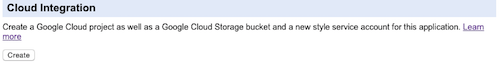
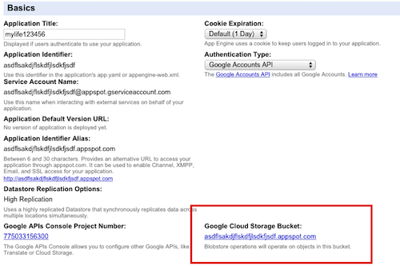

MyLife: A single-user OhLife alternative
Posted: Last updated:OhLife shuts down
On October 19th, 2014, OhLife shut down its site. OhLife was an extremely simple personal journal website. Every day it sent you an email, saying "How was your day?" and you simply replied to that email with some description of your day. You could also attach an image to the email which would then be saved with your post. The OhLife website then allowed you to view and edit your journal.
OhLife was not a blog, or social in any way. The posts were not viewable by anyone but yourself. Their main gimmick was that in every email they sent you they included your entry from one year before. It's surprisingly fun to get a reminder of what you were doing a year ago. I've often tried maintaining a journal, but OhLife is the only one that I've managed to write in for more than a few days. Mostly because I am obsessive about keeping my inbox empty. When OhLife shut down I had 1476 entries, so more than 3 years worth.
Building an alternative
When I heard that OhLife was shutting down I wanted to keep writing a journal through email.The Hacker News thread about the shutdown mentioned a few alternatives, but I wasn't really eager to start using another website that might shut down in a few months. After all, it seemed like OhLife couldn't make things work out financially, so why should other sites? This type of project also seems like something someone might start up without much effort and quickly lose interest in. So, I decided to not rely on anyone else and create my own version from scratch!
There are plenty of places that can host a simple website, but the most important thing for me was to be able to write simply by answering emails. There are a couple of important rules about running your own mail server:
- Don't!
- Really, don't!
Then I remembered that Google App Engine had the option of receiving mail, it simply gets posted to your app like a normal web request. App Engine also has a free quota, so I could host the whole thing there. The free quota isn't a lot, but since I basically only need to send out one email and receive one email per day it's more than enough for my needs. I rarely view my journal online, I mostly just read the year-old entries that come by email and answer them. But I still wanted to be able to edit and delete entries, so I ended up building a full-featured OhLife alternative, called...
MyLife
MyLife is written in Python, and is meant to be hosted on App Engine. You need to be fairly technical to set it up, but once you've done that it's easy to use. If you're not technical and just want another hosted OhLife clone alternative, try DailyDiary, AhhLife, Trailmix or dabble.me. If you on the other hand you are technical and prefer to host your own version keep reading :)
MyLife has the following features:
- Send you an email every day, including an old entry from a year/month/week ago
- Image attachments in your reply email will be saved with your post
- Edit and delete posts and images in a simple web interface
- Import entries from OhLife
- Export all entries and photos, in the same format as OhLife used, so you can easily import it into some other OhLife alternative
- Configure when you want your email, and what email address should be used
- Authenticate with your Google account, so no passwords are stored
- Backup to Dropbox - New on 2014-11-05
Those are all the features I need and am interested in, so there probably won't be any updates to this, ever. I like simplicity :) The web interface is simple, but does everything I need. Like the title says this is a single-user application. I don't want to host other peoples journals, I just want to host my own and be sure that no company can shut it down. But you are free to host your own journal using my code...
Screenshots
Setup instructions
Before you try setting up MyLife I would just like to say...
This software is provided AS-IS, use it at your own risk. I take no responsibility for any security issues, data loss, email parsing failures or anything else which might happen. You are free to inspect the source code to verify that it meets your needs. You should also check your first few entries to make sure that your emails are being parsed correctly. I have only tested emails from Gmail and the iPhone mail app, I have no idea if other mail clients might mess up some formatting.
Ok, now that that's out of the way...
- Download and install the App Engine SDK for Python
- Create a new App Engine application, give it some unique id. We'll call it "yourappid" for the rest of these instructions. Choose "Google Authentication" for the authentication option.
- Download the source code from https://github.com/einaregilsson/MyLife. If you want a stable release take one from the Releases page.
- Go into the MyLife folder. Type appcfg.py -A yourappid update .
- Go to https://yourappid.appspot.com. If you're not logged into your Google account you will be prompted to give the application permission to get your email address.
- Now you need to create a Google Cloud Storage bucket for your images and other files. Goto https://appengine.google.com/settings?&app_id=s~yourappid, and on the bottom of the page is a heading called Cloud Integration. Click on the Create button there.  Wait a couple of minutes and then refresh the page. You should see at the top of the page the name of your bucket, when you see that then it's ready.  You must create your bucket like this, not manually. If you do it manually you will have to enable billing and it will not be part of your free quota!
- Go the the settings page on your app and configure when you want your email, and which email address should be used (by default it will use your Google address)
- That's it! You'll get the first email immediately after you've logged in, so you can try replying and seeing how it works. After that you'll get an email daily at the time you choose.
Importing your OhLife backup
Go to the Settings page at https://yourappid.appspot.com/settings. At the bottom there is an option to import OhLife entries. It expects a zip file which contains one .txt file and optionally some image files. If you have downloaded your final backup from OhLife the file will already be in the right format.
The import is the only time you might actually run into problems with the free quota on App Engine. There are a limited number of write operations per day, and you might run out. My backup had 1476 posts, but only 3 photos, and that used about 38% of my daily write quota. If you have a lot more photos you might not be able to import everything in one go. If that happens you have two options:
- Enable billing for your app in App Engine
- Import the same zip file again the next day. It will ignore any posts where there's already a post for that date in the database, so it will only import the posts that weren't imported the day before.
You might see a 'Waiting for import to start' message after you upload the zip file and it might be there for up to 2 minutes without anything happening. Don't worry about it, just wait, it will start eventually. This happens because App Engine limits requests to 30 seconds so the actual import is run in a task queue, and when you start a task in a task queue in App Engine it doesn't necessarily start right away.
Some notes
- MyLife uses Google authentication. That means that if someone else goes to https://yourappid.appspot.com they will get prompted to give your application access to their Google account, which is kind of weird. However, the application is configured to only give administrators access, and the only administrator is the Google account who created the application in App Engine. So, even if other people go to your page they will just end up getting a "Not allowed" page. If you give someone else Administrator rights on your application then they will also have full access to your journal.
- This is a personal journal, so you shouldn't give out your app id. Yes yes, security by obscurity is not an answer, but there's just no reason to give it out, and it's extremely easy to DDos an App Engine app that is just using the free daily quota.
- Text takes almost no space, but images might. I keep the full size version of each image, and a scaled down version. The free quota for the Blobstore is 5GB, if you go over that you'll need to either enable billing for your application, or delete some photos.
- Verify your posts after import, and check that the first few email posts are being parsed correctly. I'm parsing the html version of the emails, because in the emails I got from Gmail they kept inserting hard linebreaks in the middle of my lines in the plaintext version. If anyone knows why, or how that could be fixed please let me know.
And that's it! I've been using MyLife now for about three weeks, and so far it's been working perfectly for my needs! Let me know in the comments or by email if you end up using it :)